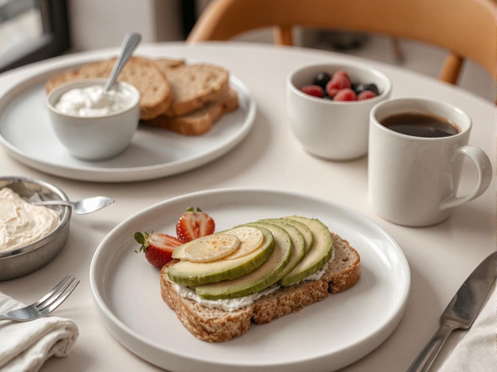
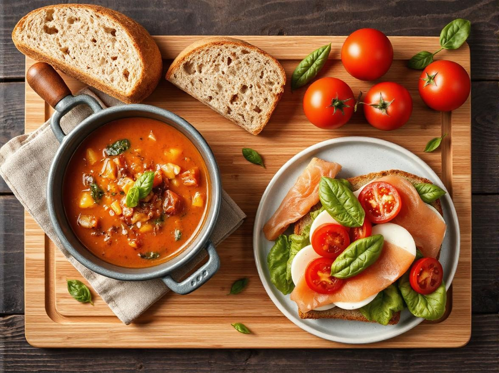
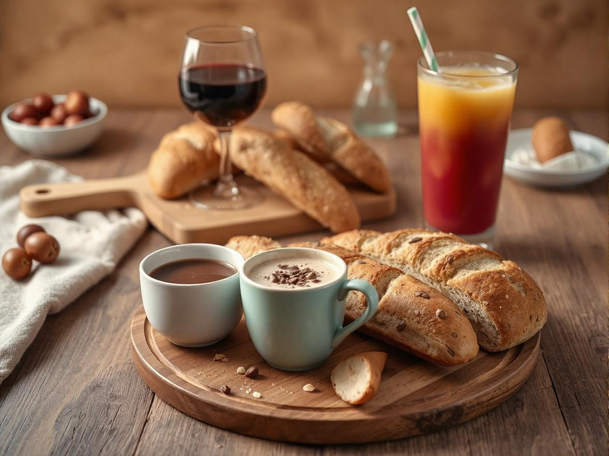

Bread Pairing 101: Turning Every Meal into a Culinary Adventure
Ah, bread. The humble staple that somehow manages to steal the spotlight on our plates. It’s more than just a sidekick; it’s a star waiting to shine. Pair it right, and you’ve got magic—meals that turn into a full-blown celebration of flavors. At SweetCrust Bakery, we believe every loaf has a story, and we’re here to help you create your own. So grab a slice, make yourself comfortable, and let’s explore the art of bread pairing together.
Oh, by the way, what’s your favorite bread? Is it on our list? If not, don’t worry—we’re not here to judge. Except maybe if you say white bread with Milo—then we’ll need to talk.
Ready to pair your meals with the best bread in town? Order your Heritage Bread Box today!
Why Bread Pairing Matters
You know that feeling when you dip crusty sourdough into curry, and it’s so good you want to close your eyes and hum? That’s the power of pairing. It’s not just about taste—it’s about creating harmony. The texture, aroma, and flavor of bread can transform a meal, from enhancing the boldness of sambal to balancing the creaminess of butter chicken.
Bread also has this magical way of connecting us to culture and tradition. Whether it’s pairing French baguettes with camembert or naan with a rich dhal, bread has always been more than food—it’s a hug for your soul. At SweetCrust, we honor that heritage but with a modern, Malaysian twist (think pandan-infused loaves, anyone?).
When done right, bread pairing is the ultimate meal enhancement, making every bite memorable and satisfying.
Curious about how to elevate your meals with the perfect loaf? Shop our artisan breads now!
SweetCrust’s Perfect Pairings for Every Occasion
Breakfast Bliss

- Sourdough + Avocado Toast: Tangy sourdough and creamy avocado are the breakfast couple of the century. Sprinkle some chili flakes and add a poached egg for that fancy café vibe.
- Brioche + Honey Butter: Sweet, buttery brioche with a drizzle of honey butter? Pair this with teh tarik for a combo that screams “comfort food, Malaysian edition.”
- Multigrain Bread + Greek Yogurt + Berries: Hearty multigrain with a dollop of yogurt and a handful of berries—perfect for those who want to be healthy but still enjoy life.
Lunchtime Favorites

- Multigrain Bread + Hearty Soups: The nutty richness of multigrain bread is the perfect match for creamy soups like mushroom or lentil. Add a side of grilled veggies for a wholesome, filling meal.
- Brioche Gourmet Sandwiches: Imagine smoked salmon, cream cheese, and dill, sandwiched between our pillowy brioche. It’s like having a European picnic—minus the passport.
- Sourdough + Caprese Salad: Fresh mozzarella, juicy tomatoes, and sourdough? Finish with a drizzle of balsamic glaze, and you’ve got yourself the most chi-chi alfresco lunch ever.
Dinner Indulgences
- Seasonal Loaf + Artisan Cheeses: Pair our specialty loaf with a cheese platter, complete with fig jam and nuts. Perfect for hosting or a Netflix binge night.
- Brioche Sliders: These mini brioche sliders, stuffed with pulled chicken or veggie patties, are a crowd-pleaser. Add a side of keropok for a cheeky local twist.
- Sourdough + Stews: The sturdy crust of sourdough soaks up every drop of stew, from beef rendang to minestrone. Is it comfort food, or is it heaven? Who cares—it’s delicious.
Pairing Bread with Drinks

- Brioche + Hot Chocolate: It’s like a warm hug on a rainy day. Bonus points if you’re watching the rain through your balcony window for that aesthetic.
- Sourdough + Red Wine: Think bold reds like Merlot to match sourdough’s tangy character. Perfect for dinner parties or your feeling fancy moments.
- Multigrain + Smoothies: A slice of multigrain with a fruity smoothie—it’s healthy, delicious, and Instagram-ready.
Pro Tips for Choosing the Right Bread
- Texture Matters: Pair soft breads like brioche with creamy dishes, and sturdy breads like sourdough with hearty meals.
- Balance Flavors: Match sweet breads with spicy dishes for contrast, or tangy ones with creamy curries.
- Celebrate Seasons: Seasonal loaves are a great way to enjoy fresh, local ingredients—pumpkin bread in October? Yes, please.
- Experiment Freely: No pairing police here—if sambal + sourdough is your thing, we say go for it.
Discover Your Perfect Pairing with SweetCrust
Good food deserves great bread. With SweetCrust’s Heritage Bread Box—featuring sourdough, multigrain, brioche, and a seasonal specialty—you’ll never have a dull meal again.
Order today and start turning your meals into adventures. Click here to order now!
Because life’s too short to settle for meh bread. Let’s make every bite memorable, together.
Back